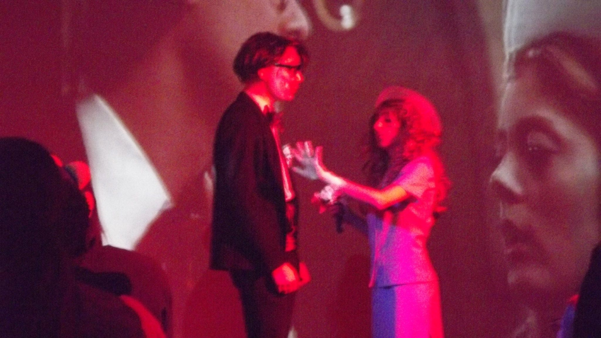
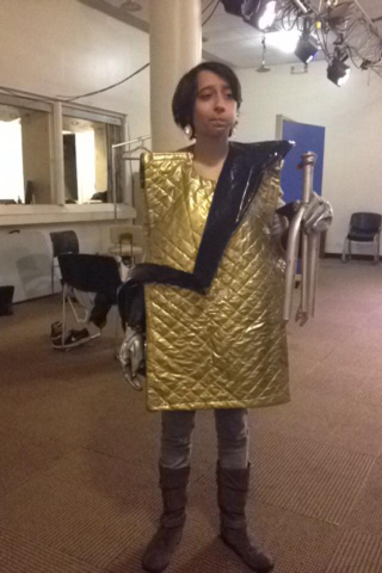

I used to help run a Rocky Horror Picture Show shadowcast. I played Janet for a while, then Columbia. I also directed it and made a lot of costuming in a very hodge podge manner. Lots of hot glue. Rocky Horror was fun to do because it was less pressure to be good at acting cuz it wasn't really about that. It was just a fun space for little weirdos to be absolute freaks if they needed to be. Directing it on the other hand was a lot more pressure. But it made me a really organized person, in a trial-by-fire way. I'd do it again if I somehow had a college student's free time but my adulthood's job money.

It was a hobby that required a complete lack of embarrassment. It required resorsefulness, craftyness, and a 'helluva' lot of whimsy. This sort of hobby was very much a passion project, very low budget. If everyone wasn't working together on borrowed time and money it didn't always work. Though when everyone is putting love and effort in, the end result is amazing. It is impossible to categorize I feel because it's a different beast than theater, but that may be the closest descriptor. Either way it's a fabulous and filthy time.

Archery is a super fun hobby I've picked up from my larping hobby. I love larp-archery and normal archery. Though it has been a long time since i've been able to practice either. I hope to go to Gotham Archery this summer for normal archery, and maybe practice my larp-archery in the park. I have a longbow, and a recurve bow. My larp friends had the recurve bow custom painted with fun stuff as a sweet gift for me. I love it very much. Below you can see comparitively, what a recurve bow, a larp arrow, and a basic longbow look like together. If you were wondering how one "role-plays" archery, the answer is foam-tipped arrows and real bows. I am a very small person so my bows have at most a 25 pound draw weight, and the arrows are top heavy so when doing larp-archery, you have to factor a downward curve into your shot. I am always reminded of this when I get the chance to practice at a real range, with real arrows. My shots always skew too far upwards at first because instinctively, I am used to that top-heavy arrow.
What career would make you happy? What hobbies keep you not just sane, but fulfilled? Think about it!